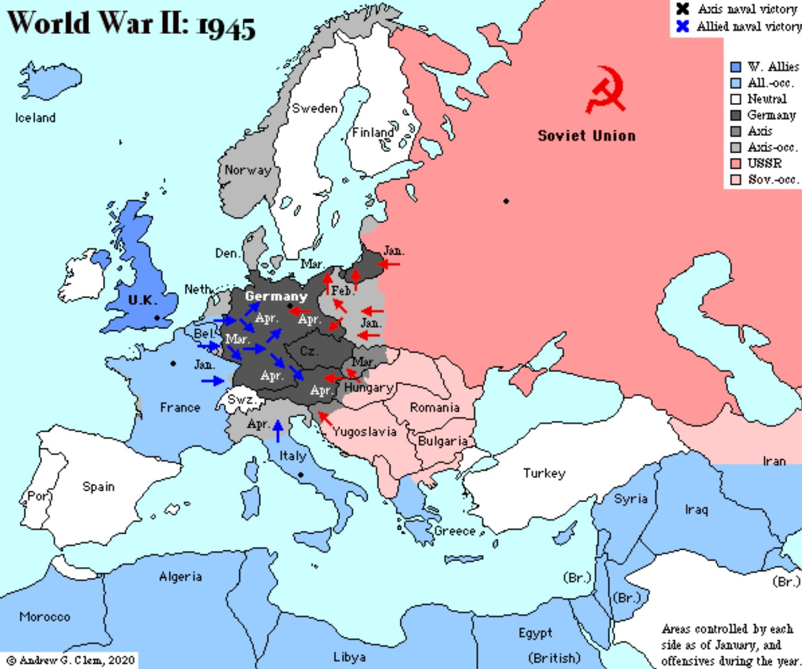
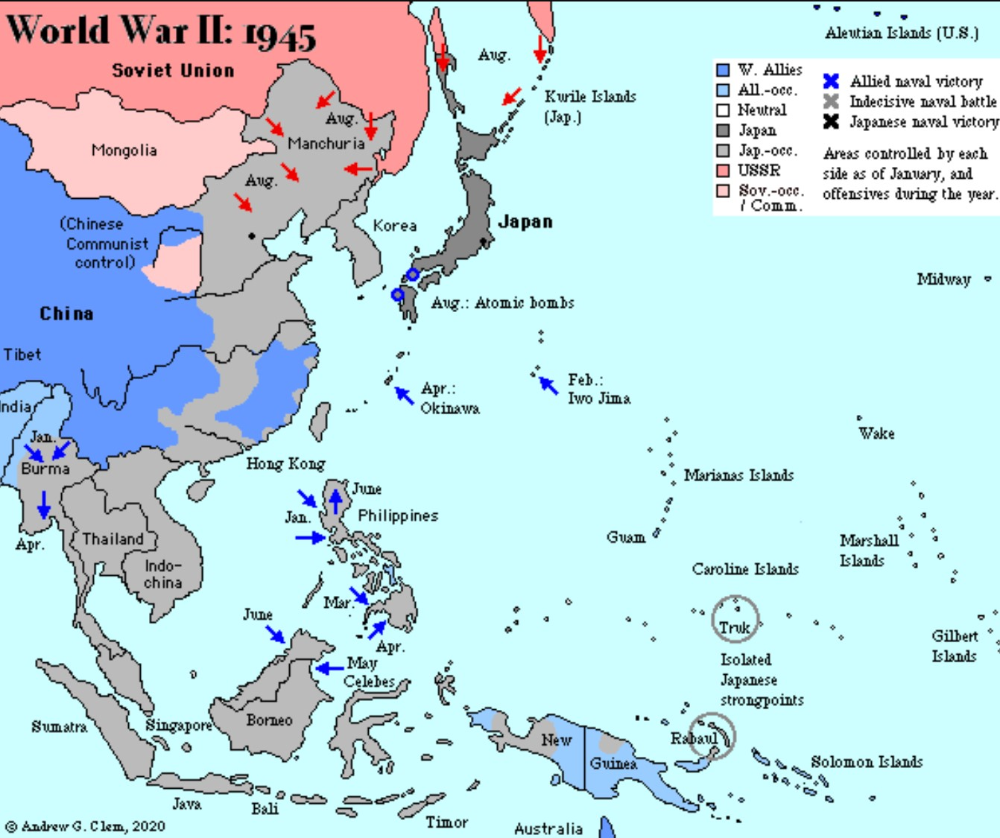
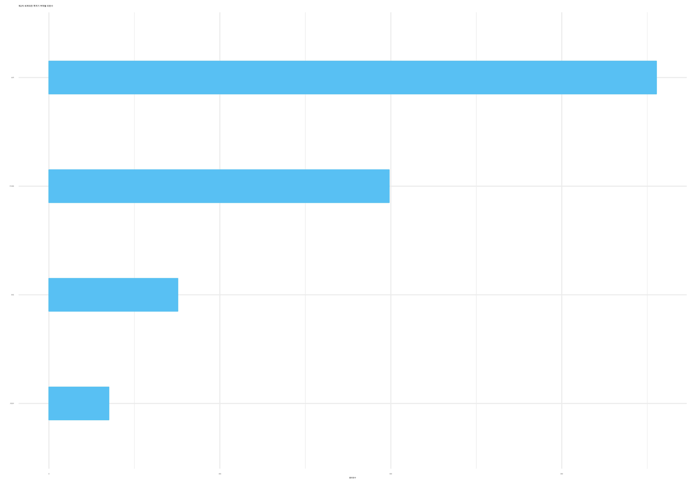

europe_names <- glue::glue("Europe_{1939:1945}")
pacific_names <- glue::glue("Pacific_{c(1937, 1939, 1941:1945)}")
for(i in 1:length(europe_names)) {
# cat(europe_names[i], "\n")
# download.file(url = glue::glue("http://www.andrewclem.com/War/Maps/{europe_names[i]}.gif"),
# destfile = glue::glue("{here::here()}/fig/world_war/{europe_names[i]}.png"), mode = "wb" )
cat(pacific_names[i], "\n")
download.file(url = glue::glue("http://www.andrewclem.com/War/Maps/{pacific_names[i]}.gif"),
destfile = glue::glue("{here::here()}/fig/world_war/{pacific_names[i]}.png"), mode = "wb" )
}12 폭격비행기
andrewclem 웹사이트에 2차 세계대전 유럽전선과 태평양전선에 대한 전황지도가 공개되어 있어 이를 연도별로 취합하여 .gif 파일로 제작한다.
library(tidyverse)
library(magick)
world_war_files <- fs::dir_ls(path = "fig/world_war", glob = "*.png")
europe_files <- world_war_files[str_detect(world_war_files, "Europe")]
pacific_files <- world_war_files[!str_detect(world_war_files, "Europe")]
## 유럽 전황
europe_m <- magick::image_read(pacific_files[1])
for (i in 2:length(europe_files)) {
europe_m <- c(europe_m, magick::image_read(europe_files[i]))
}
europe_ani <- magick::image_animate(europe_m, fps = 1, loop = 0, dispose = "previous")
magick::image_write(europe_ani, "fig/world_war_europe.gif")
## 태평양 전황
pacific_m <- magick::image_read(pacific_files[1])
for (i in 2:length(pacific_files)) {
pacific_m <- c(pacific_m, magick::image_read(pacific_files[i]))
}
pacific_ani <- magick::image_animate(pacific_m, fps = 1, loop = 0, dispose = "previous")
magick::image_write(pacific_ani, "fig/world_war_pacific.gif")12.1 세계대전
12.1.1 유럽전선

12.1.2 태평양 전선

12.2 대공포
12.3 폭격기 데이터
생존자 편향(Survivorship Bias)의 오류는 실패한 사례나 숨겨진 요인을 고려하지 않고 오직 ‘생존’ 혹은 ‘성공’ 사례만을 분석하여 일반화하는 과정에서 발생하여 데이터나 결과 해석을 왜곡시킬 수 있다.
아브라함 왈드(Abraham Wald)는 제2차 세계대전 동안 컬럼비아 대학 통계연구그룹(Statistical Research Group)에서 일했다. 전투기와 같은 군사 장비가 적으로부터 얼마나 많은 피해를 입을 수 있는지에 대한 분석을 수행했으며, 특히 ‘생존자 편향(Survivorship Bias)’ 문제를 고려한 통계적 방법을 제안하여 중요한 기여를 했다.
전투기가 전투에서 돌아올 때 어떤 부분이 가장 많이 손상되는지에 대한 데이터가 있었다. 대부분의 사람들은 데이터를 보고 손상이 가장 많이 발생한 부분을 강화해야 한다고 생각했지만, 왈드는 이와는 반대의 접근을 택했는데, 돌아오지 못한 전투기에 대한 데이터가 누락되어 있으므로, 이를 고려하지 않으면 편향된 결론을 내릴 수 있다고 지적했다. 즉, 손상이 적게 발생한 부분이 전투기 귀환에 오히려 더 중요할 수 있다는 것이다.

전폭기를 크게 4가지 부분으로 나눠 데이터를 임의로 생성해보자.
- Wing_Hits : 전폭기 날개
- Fuselage_Hits : 전폭기 주 몸체
- Engine_Hits : 전폭기 엔진
- Cockpit_Hits : 전폭기 조종석
# tidyverse 패키지 불러오기
library(tidyverse)
# 난수 생성을 위한 seed 설정
set.seed(123)
# 100대의 전투기 데이터 생성
n_planes <- 100
# 데이터프레임 생성
plane_raw <- tibble(
Plane_ID = 1:n_planes,
Wing_Hits = sample(0:20, n_planes, replace = TRUE),
Fuselage_Hits = sample(0:10, n_planes, replace = TRUE),
Engine_Hits = sample(0:5, n_planes, replace = TRUE),
Cockpit_Hits = sample(0:2, n_planes, replace = TRUE)
)
plane_tbl <- plane_raw |>
pivot_longer(-Plane_ID, names_to = "피탄부위", values_to = "피탄수") |>
mutate(부위 = case_match(피탄부위,
"Wing_Hits" ~ "날개",
"Fuselage_Hits" ~ "주 몸체",
"Engine_Hits" ~ "엔진",
"Cockpit_Hits" ~ "조종석"))
# 각 부위별 총 타격 수 계산
summary_tbl <- plane_tbl %>%
group_by(피탄부위, 부위) |>
summarise(총피탄수 = sum(피탄수)) |>
arrange(desc(총피탄수))
summary_tbl
# 계산 결과 확인
air_gg <- summary_tbl |>
ggplot(aes(x = fct_reorder(부위, 총피탄수), y = 총피탄수)) +
geom_col(width = 0.3) +
coord_flip() +
labs(x="",
title = "제2차 세계대전 폭격기 부위별 피탄수") +
theme_minimal() +
scale_y_continuous(labels = scales::comma)
ragg::agg_jpeg("images/air_gg.jpg",
width = 10, height = 7, units = "in", res = 600)
air_gg
dev.off() 
12.4 보강
날개(Wing) 부분이 가장 많이 타격을 받아 이 부분과 그 다음 주 몸체를 보강해야 된다고 볼 수도 있다. 이는 생존한 전투기만 고려한 전형적인 생존자 편향으로 실제로 엔진과 조종석을 보강해야 더 큰 효과를 볼 수 있다.